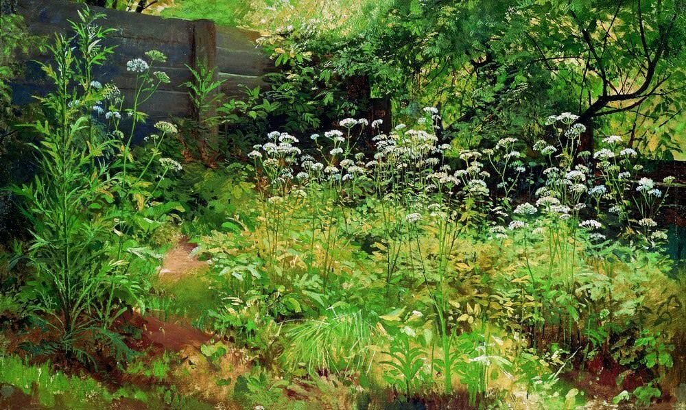
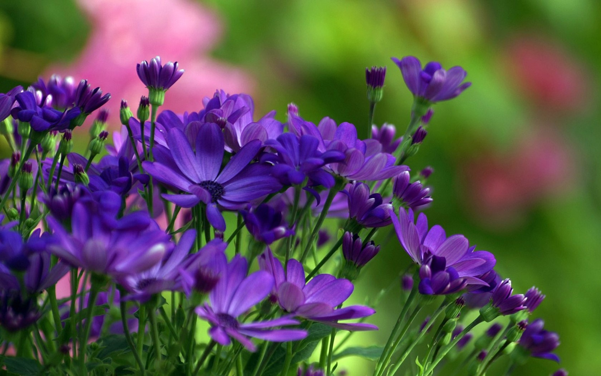

Расте́ния (лат. Plantae) — биологическое царство, одна из основных групп многоклеточных организмов, включающая в себя в том числе мхи, папоротники, хвощи, плауны, голосеменные и цветковые растения. Нередко к растениям относят также все водоросли или некоторые их группы. Растения (в первую очередь, цветковые) представлены многочисленными жизненными формами — среди них есть деревья, кустарники, травы и др.Растения являются объектом исследования науки ботаники.
 Подробнее...Цвето́к (множ. цветки́, лат. flos, -oris, др.-греч. ἄνθος, -ου) — система органов семенного размножения цветковых (покрытосеменных) растений. Цветок представляет собой видоизменённый, укороченный и ограниченный в росте спороносный побег, приспособленный для образования спор и гамет, а также для проведения полового процесса, завершающегося образованием плода с семенами. Исключительная роль цветка как особой морфологической структуры связана с тем, что в нём полностью совмещены все процессы бесполого и полового размножения. От шишки голосеменных растений цветок отличается тем, что у него в результате опыления пыльца попадает на рыльце пестика, а не на семязачаток непосредственно, а при последующем половом процессе семязачатки у цветковых развиваются в семена внутри завязи.Цветок, будучи уникальным образованием по своей природе и функциям, поразительно разнообразен по деталям строения, окраске и размерам. Самые мелкие цветки растений семейства Рясковые имеют в диаметре всего около 1 мм, в то же время как самый крупный цветок у раффлезии Арнольда (Rafflesia arnoldii) семейства Раффлезиевые, обитающей в тропических лесах на острове Суматра, достигает в диаметре 91 см и имеет массу около 11 кг.
 Подробее...